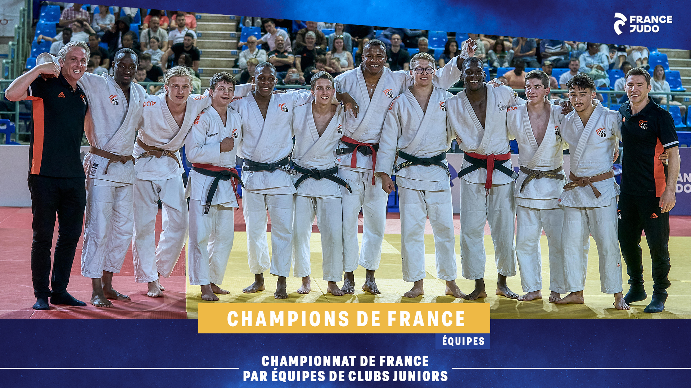

|
Parcours académique:De la 6ème à la troisième j'ai étais au collége d'Hautefeuillle a Courbevoie.J'y ai,obtenu mon brevet mention bien.A mon entrée au lycée j'integre la Trinité un lycée à Neuilly-sur-Seine.Je chosie les spécialitées :Maths,NSI,SES en premiere pour garder Maths et SES en terminale.En terminale je passe uniquement le concour sesame.Une année ou j'obtiendrai mon bac mention assez bien ainsi que l'ecole de commerce que je souhaité . |
|
Parcours Sportif:J'ai commencé à l'age de 7ans le judo .J'en ai fait pendant 11 ans .Pendant ces années j'ai obtenu de nombreux titre dans toutes les catégories : 3 fois champions du déartement du 92,championt d'IDF ,ainsi que champion de France en minime avec le département des hauts de seine et plus recemment en 2022 avec mon club de l'ACBB toujours par équipe.En 2022 j'obtiens ma ceinture noir.En 2023 je décide de me tourner vers un autre sport avec l'ecole. |

|